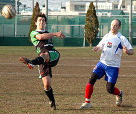
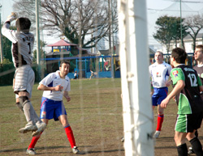

|
YC&AC, Sun 5th March. Funny game football. After two losses and a draw the words 'Hibs' and 'Slump' were being used together in certain circles. However those in the know were aware that the Hibs still had quality players in all areas and had been extremely unlucky recently and had wedged a Hasaki champions league tournament win in between their poor TML results. Those same people in the know had faith that we would come up with a good result given some luck.
We were somewhat disappointed to be playing the French at the bumpy YCAC that had become a bit of a bogey ground of us having not won there for over 12 months.
5 minutes into the game and a France FC corner was punched clear by Hitosh but it landed at the feet of a France player in space and he whacked it strongly goal bound and Ike was standing on the goal line and the ball was fizzing by him, 6 inches to the side of his hip and an instant reaction saw him put out his hand and stop the ball. After a couple of dodgy decisions cost us dearly against the Swiss, this time the ref had no choice and correctly showed Ike a red card and awarded a penalty. The France No. 11 gave Hitoshi no chance as he thumped it into the bottom corner.

1-0 down with10 men and 75 minutes to play and it looked like the Hibs were going to put a capital S on that slump. However we decided to continue to attack and an amazing 35 minutes followed. The equalizer came after Josh chipped over the defence and the keeper stayed on his line and Bevan tapped in from close range to equalize. Mick then thumped in a great shot from a tight angle after Tomo played him in from the right side. Josh thumped his regular goal against the French in from a free kick from 20 yards that hit the net rising. The goals then became a bit of a blur as we scored every 5 minutes before half time. Yohei's powerful thump from 25 yards wide out being the pick of the bunch. Come the half time whistle and we had scored 7 unanswered goals with 10 men, were 7-1 ahead and the game was as good as over. A truly amazing half of football.
The second half was always going to be a bit of a let down, but after Yohei thumped in another after some good work from Steve, The Hibs were 8-1 up and hoping for a cricket score. However the intensity of our play seemed to drop off and we let the French back in. To their credit the French continued fighting right to the end and they scored 4 goals in a 10-minute period towards the end of the half to put some respectability in the score line.
Funny game football..
Report - BC.
|